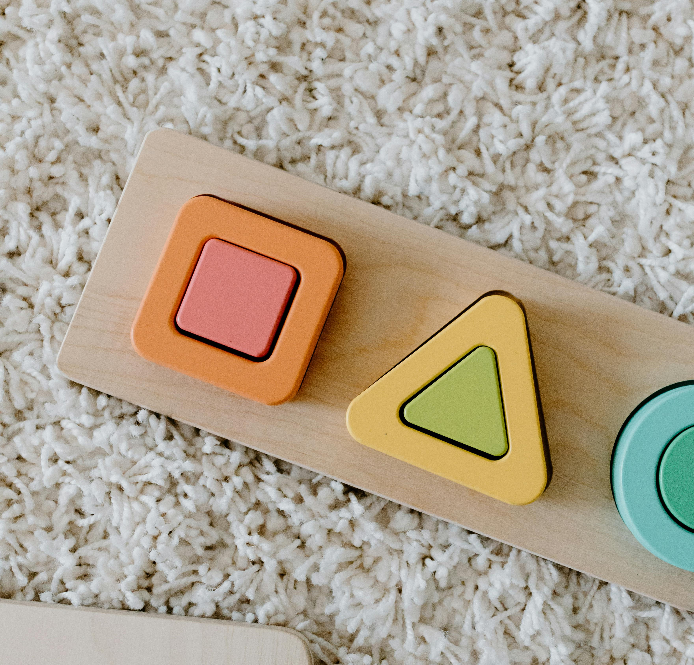
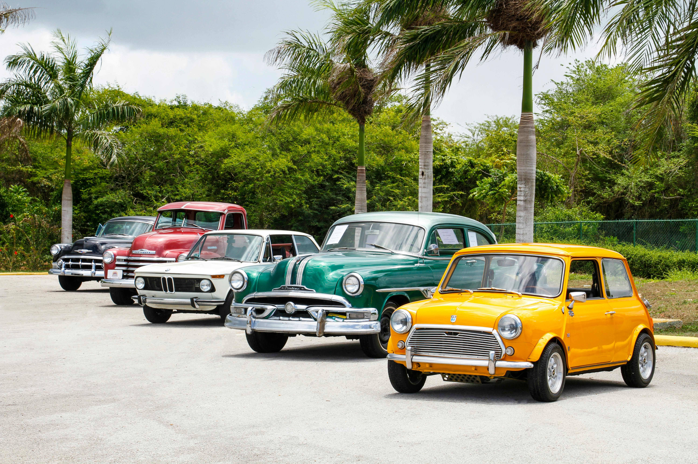
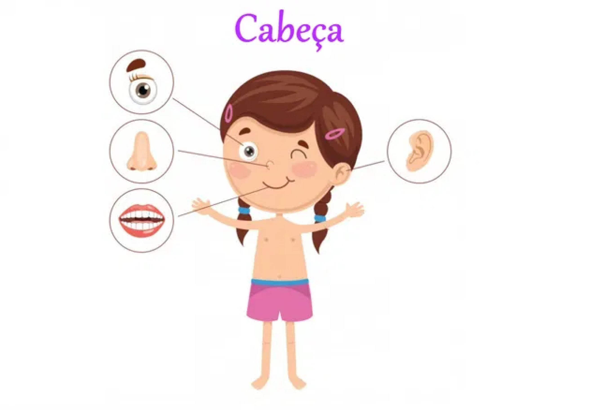

Meios de Transporte e Comunicação
Vamos comparar diferentes meios de transporte e comunicação, entender seu papel na conexão entre lugares, e discutir os riscos e o uso responsável! 🚀
Meios de Transporte
1. Carro
- Papel na Conexão: Permite viagens curtas e flexíveis, conectando lugares próximos como casa, escola e supermercado.
- Vida: Acidentes de trânsito.
- Ambiente: Emissão de gases poluentes.
- Preferir caronas e transportes públicos quando possível.
- Manter o carro bem regulado para reduzir emissões.
Riscos:
Uso Responsável:

2. Avião
- Papel na Conexão: Conecta lugares distantes rapidamente, facilitando viagens internacionais e interestaduais.
- Vida: Acidentes aéreos, embora raros.
- Ambiente: Grande emissão de CO2.
- Optar por voos diretos para reduzir emissões.
- Usar alternativas quando possível para viagens curtas.
Riscos:
Uso Responsável:
3. Bicicleta
- Papel na Conexão: Ideal para deslocamentos curtos e locais, promovendo um estilo de vida saudável.
- Vida: Acidentes de trânsito, principalmente em cidades com pouca infraestrutura para bicicletas.
- Ambiente: Nenhum risco significativo.
- Usar capacete e seguir as regras de trânsito.
- Optar por ciclovias e rotas seguras.
Riscos:
Uso Responsável:
Meios de Comunicação
1. Telefone
- Papel na Conexão: Conecta pessoas em tempo real, ideal para comunicação rápida e urgente.
- Vida: Dependência e possíveis problemas de saúde (excesso de uso).
- Ambiente: Produção e descarte de aparelhos.
- Limitar o tempo de uso e reciclar aparelhos antigos.
Riscos:
Uso Responsável:
2. Internet (e-mail, redes sociais)
- Papel na Conexão: Facilita a comunicação global instantânea, acessível em qualquer lugar com conexão.
- Vida: Riscos de privacidade e segurança online.
- Ambiente: Consumo de energia dos servidores.
- Proteger informações pessoais e usar com moderação.
Riscos:
Uso Responsável:
3. Correio
- Papel na Conexão: Envio de documentos e pacotes, especialmente úteis em áreas sem acesso fácil à internet.
- Vida: Atrasos e perdas ocasionais.
- Ambiente: Uso de papel e combustível para transporte.
- Usar papel reciclado e optar por envios digitais quando possível.
Riscos:
Uso Responsável:
Vamos lembrar para Aprender?
O que são imagens 2D?



